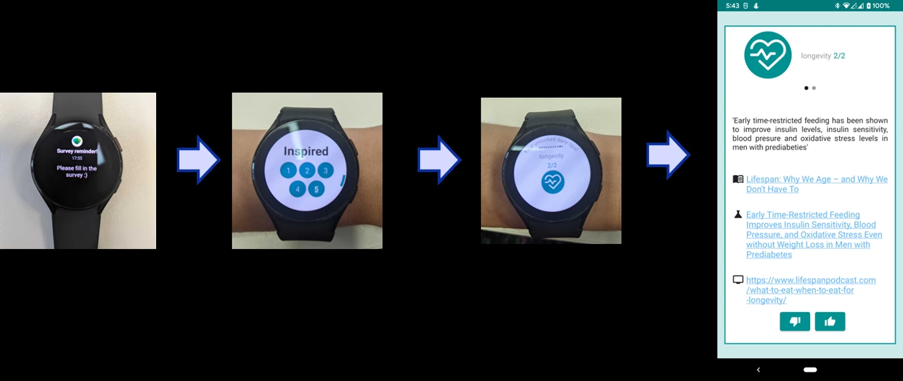
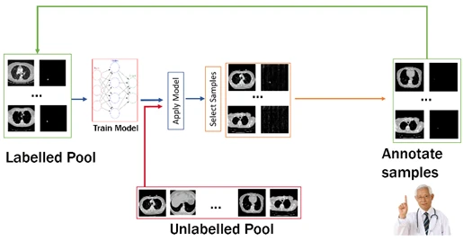

When should AI advice be questioned?
Compare explanation methods and study how faithfully they reflect model behaviour, or how people respond to correct and misleading predictions.
Learning through research
Student research in AI and health, from bachelor’s and master’s projects to doctoral research.
For prospective students
My work connects methodological AI with clinical questions and personalised patient support. These directions relate to CAREPATH, CLARITY, and the wider research programme; a thesis question and its scope would be agreed individually.
Compare explanation methods and study how faithfully they reflect model behaviour, or how people respond to correct and misleading predictions.
Investigate uncertainty in segmentation or patient-state estimates, including reader variability and reliability under distribution shift.
Explore reinforcement learning for intervention timing or personalisation, with careful attention to reward design and evaluation.
I welcome enquiries from students motivated by a well-defined scientific question. Relevant preparation includes programming, machine learning, and the ability to evaluate evidence critically. In your enquiry, describe your experience, degree programme, preferred timing, and the question you would like to investigate.
Project fit, supervision capacity, and availability are discussed individually.
Enquire about student research ↗See past student projects & publications ↓Supervision at Canon Medical Research Europe, Sano Centre for Computational Medicine, and, since 2024, Vrije Universiteit Amsterdam and Amsterdam UMC.
Student projects & publications ↓Current students
Current PhD student
Reinforcement learning for mobile health (mHealth).
Paper: Forecasting stress transitionsCurrent PhD student
Explainable artificial intelligence (XAI).
Paper: Clinically impactful explainable AICurrent PhD student
Gaze language models.
Preprint: LEGO Co-builder Preprint: Trust for mental health supportCurrent PhD student
Reinforcement learning for personalized medication adherence.
Current PhD student · Sano
Multimodal patient state estimation.
Profile at SanoStudent projects & publications
Several student projects have led to conference and journal publications. Explore the papers alongside the projects below.
VU & Amsterdam UMC
Student details to be added.
Master’s research publication: uncertainty-aware assessment of rare tumor segmentation.
Paper: Detecting silent failures in rare tumor segmentationVU & Amsterdam UMC
Student details to be added.
VU & Amsterdam UMC
Student details to be added.
Bachelor’s students · Sano
Sano Centre for Computational Medicine
Research on personalizing gamification in mobile health surveys and measuring the burden of self-reporting with wearable data.

Canon Medical Research Europe
Continual learning for medical image segmentation.
Publication · DART / DCL at MICCAI 2020: Continual Class Incremental Learning for CT Thoracic Segmentation ↗Canon Medical Research Europe
Active learning for lung nodule segmentation: choosing informative samples for expert annotation.

Publications & preprints